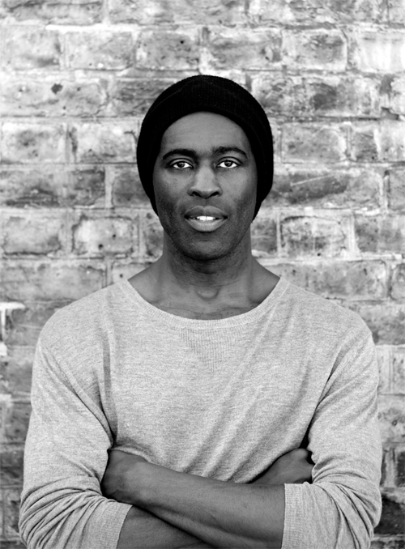
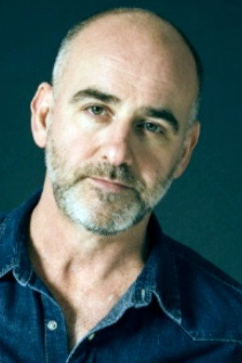
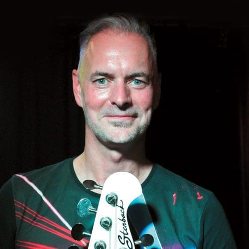
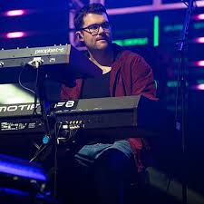
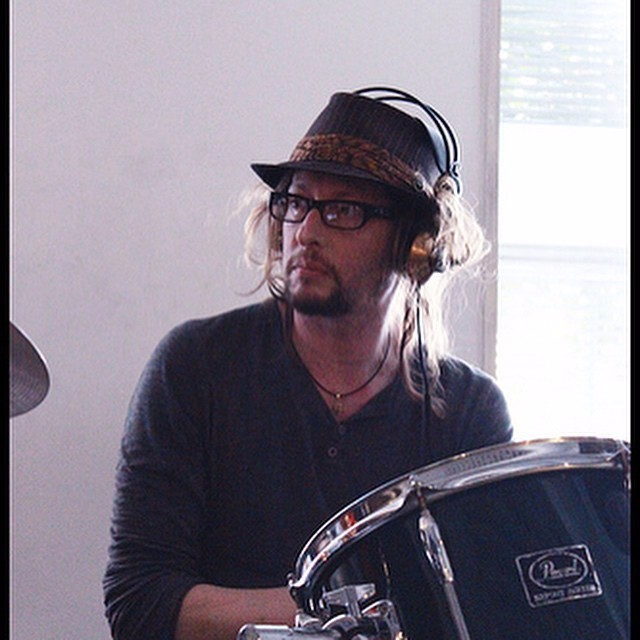
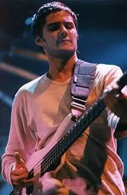
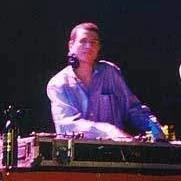

Sola Akingbola – Percusión (1999–presente)
Rob Harris – Guitarra (2000–presente)
Paul Turner – Bajo (2005–presente)
Nate Williams – Coros y teclados adicionales (2010–presente)
Nick Van Gelder – Batería (1992–1994)
Nick Fyffe – Bajo (1998–2005)
DJ D-Zire (Darren Galea) – DJ / Turntables (1993–2000)